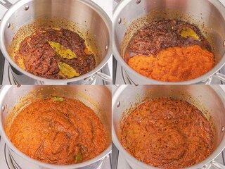

Jollof Rice Recipes
The Perfect Party Jollof Rice
This recipe is an impeccable manual for consistently creating the most
delectable Nigerian Jollof Rice. It showcases the utmost genuine flavors,
accompanied by an exquisite aroma and a taste that is simply heavenly!.
The unparalleled authenticity of its flavors, coupled with an irresistible
aroma, promises a gastronomic experience that is truly divine and
unmatched in its sheer deliciousness!
Ingredients
For the Stew Base:
-
1 pound (475g) plum tomatoes (about 3 medium tomatoes), cored and
roughly chopped
-
2 medium (7-ounce; 200g) red bell peppers or 2 red shepherd peppers (see
note), stemmed, seeded, and roughly chopped
- 1 medium (8-ounce; 225g) red onion, roughly chopped
- 1/4 of a Scotch bonnet or habanero pepper, stemmed and seeded
- 1 1/2 cups (355ml)
For the Jollof Rice:
- 1/4 cup (60ml) peanut, vegetable, or other neutral oil, divided
- 1 medium (8-ounce; 225g) red onion, thinly sliced, divided
- 3 dried bay leaves
-
2 teaspoons Caribbean/Jamaican-style curry powder (see note), plus more
if needed
- 2 tablespoons (30g) tomato paste
- 3 teaspoons (12g) unsalted butter, divided (see note)
- 1 1/2 cups (355ml)
-
2 cups (400g) converted long-grain rice or Golden Sella basmati, rinsed
-
1 plum tomato (4-ounces; 120g), halved then sliced thinly crosswise into
half-moons
Steps In Cooking Jollof Rice:
-
For the Stew Base: Blend tomatoes, red bell pepper,
onion, Scotch bonnet or habanero, and broth in a blender pitcher. Puree
until a velvety mixture develops, approximately 2 minutes. This will
result in nearly 5 cups (1.18L) of liquid.
-
Move the base of the stew into a 3-quart saucier or saucepan, partly
cover it with a lid to prevent splattering, and heat it until it reaches
a boiling point on medium-high heat. Lower the heat to a medium-low
setting and simmer, while occasionally stirring and scraping the bottom,
until it is reduced by half (approximately 2 1/2 cups; 590ml) - this
should take about 30 minutes. Take off the heat and keep it aside.
-
For the Jollof Rice: In a 4- or 5-quart pot or Dutch
oven, heat 2 tablespoons (30ml) oil over medium heat until shimmering.
Add half the sliced onion along with the bay leaves, curry powder, dried
thyme, a large pinch of salt, and a large pinch of black or white
pepper. Cook, stirring, until the mixture is fragrant and the onions
soften slightly, about 3 minutes.
-
Stir in tomato paste and 2 teaspoons (8g) butter. Cook, stirring
continuously, until the tomato paste darkens, about 3 minutes. Stir in
reserved stew base, cover partially with the lid to prevent splattering,
and cook at a gentle simmer over medium-low heat until reduced by half,
about 15 minutes.

-
Stir in stock and bring to a boil over high heat. Season with salt and
pepper; if the curry flavor is lacking, you can add more to taste (the
curry powder should come through pleasantly but not be overpowering,
though this is a question of personal taste).
-
Stir in rice until evenly coated in sauce. Cover the pot with a double
piece of foil or parchment paper, crimped down around the edges to seal,
then top with lid (this will trap steam to lock in the flavor and aid
cooking). Reduce the heat to the lowest possible and cook for 20
minutes, then uncover pot and gently stir rice to redistribute. Cover
again and continue to cook until rice is just cooked through but still
retains a firm bite and the liquid is mostly absorbed, about 15 minutes
longer. If rice is undercooked and/or still wet, cover and cook 5
minutes longer.
-
Combine the sliced tomato with the remaining sliced onion and the
remaining 1 teaspoon (4g) of butter, stirring until the butter is
completely melted.
-
Take off the heat, place a cover on top, and allow it to rest for 10
minutes. Serve.